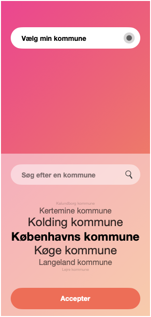

Research on stroke victims,
and tools for caretakers
View the report
and tools for caretakers
Abstract
Stroke is an acute interruption in the blood supply to the brain, caused either by brain hemorrhage or a blood-cloth in the brain. Hemorrhage is surgically treated by relieving the skull of blood, and stopping the bleeding, while blood-cloths are removed with a catheter. The larger challenge is treating the chronic impairments caused by stroke. Rehabilitating stroke victims is a complex process, as stroke causes varying physical and mental impairments.
The purpose of this Thesis is to identify which tools caretakers of stroke victims are lacking, and how their needs can be addressed through expanding the availability and awareness of tools. Providing caretakers with the necessary tools, enables caretakers to provide sufficient care for victims of stroke.
The data consists of survey results from 43 respondents, and interview transcriptions from 8 of those same respondents. The participants were invited through the utilization of social media groups for caretakers of stroke victims, on the website Facebook. Using the program Numbers, the survey results were turned into affinity diagrams. These diagrams were used to inform the nodes for coding transcriptions, and coding was done by utilizing the program NVivo. Citations from the transcripts were grouped by how they describe the needs and tools, identified in the affinity diagrams of the survey results.
The analysis was performed through plotting affinity diagrams as charts, and coding the interview transcriptions. Charts describing affinity diagrams, give an overview of the frequency of responses. Coded transcriptions provide an in-depth description of why and how caretakers are affected by stroke, and how they handle it.
The results indicate that caretakers could benefit, from an expansion of the availability and awareness of existing tools. These tools are provided to caretakers by both the Danish healthcare system, and by other caretakers, such as those in social media support groups and associations. The tools identified were: communication between caretakers, support from voluntary associations for caretakers, professional knowledge of impairments caused by stroke, access to psychological therapy, and coordination of the stroke victim’s treatment.
The purpose of this Thesis is to identify which tools caretakers of stroke victims are lacking, and how their needs can be addressed through expanding the availability and awareness of tools. Providing caretakers with the necessary tools, enables caretakers to provide sufficient care for victims of stroke.
The data consists of survey results from 43 respondents, and interview transcriptions from 8 of those same respondents. The participants were invited through the utilization of social media groups for caretakers of stroke victims, on the website Facebook. Using the program Numbers, the survey results were turned into affinity diagrams. These diagrams were used to inform the nodes for coding transcriptions, and coding was done by utilizing the program NVivo. Citations from the transcripts were grouped by how they describe the needs and tools, identified in the affinity diagrams of the survey results.
The analysis was performed through plotting affinity diagrams as charts, and coding the interview transcriptions. Charts describing affinity diagrams, give an overview of the frequency of responses. Coded transcriptions provide an in-depth description of why and how caretakers are affected by stroke, and how they handle it.
The results indicate that caretakers could benefit, from an expansion of the availability and awareness of existing tools. These tools are provided to caretakers by both the Danish healthcare system, and by other caretakers, such as those in social media support groups and associations. The tools identified were: communication between caretakers, support from voluntary associations for caretakers, professional knowledge of impairments caused by stroke, access to psychological therapy, and coordination of the stroke victim’s treatment.
Application proposal



Defense
Eksamen.key
Facebook as a platform
facilitating political expression
View the report
facilitating political expression
Users in Context
at IT-University in Copenhagen
During the course, students will be introduced to a broad understanding of the concept of context, as well as the methodological and analytical tools that will help to understand the everyday social and cultural contexts that affect how and whether users use digital products. During the course, students will be able to analyze and reflect on the personal, cultural and institutional forces that today influence the development and use of digital services and media products. This will be done through an introduction to, among other things, theories of why people use (digital) media, online cultural studies, current sociological theory with a focus on group formation and group identity, critical-oriented platform theory, as well as classical ethnography and media ethnography as methodological orientation. By working with exemplary and concrete cases, students will gain an initial understanding of how an analysis of use contexts can help improve existing products or make it possible to reach new user groups.
Report introduction
Case study
This report details a case study of the social media platform Facebook, researching how its facilitation of political expression affects user interaction with its content. The central focus of this case study was a politically-motivated user-generated Facebook post by Denmark’s national soccer team “Herrelandsholdet,” and its user-generated thread of responses, consisting of emoji-reactions denoting emotional responses, and comments containing text, images, animated images (GIFs), and links to websites and YouTube videos.
Users in this context were Facebook users interacting with the post or within the thread, and Facebook users who were or had been following Herrelandsholdet’s page on Facebook. The aim of this case study was to characterize the content of political expression on Facebook, determine what content draws the attention of users, and then to identify and measure political perspectives and how they affect interaction.
Research design
The strategy for executing this case study was to collectively research the platform and user-generated content as a project group, by collecting a dataset of empirical data, through web scraping and observation of interaction. We collectively executed a preliminary content analysis of the Facebook dataset as a group, categorizing comments by the characteristics of their contents. We collectively transcribed interviews, and then split apart, leaving the remainder of our analytical work to be executed and completed individually.
Taking root in the group work, this report angles the focus towards political perspectives expressed in response to Herrelandsholdet, and how users are affected in their interaction when exposed to these. Through a research question, and supported by analytical questions, this report aimed to measure and calculate metrics and percentages, for the purpose of interpreting results through the framework of a techno-cultural construct in Van Dijck’s model for disassembling platforms. This case study did not aim to measure or analyze the socioeconomic structure of Facebook through Dijck’s model, and instead the report discusses how a different research approach may have yielded data supporting an analysis of this structure.
Research question
How does political expression on Facebook affect user interaction with the platform?
Analytical questions
How do Facebook users in the thread express themselves?
Which content characteristics in the thread draw attention?
Which political perspectives are expressed in the thread?
How does exposure to these perspectives affect interaction with Facebook?
Facebook
Facebook is an American, monetarily freely-accessible, ad-supported social media platform, governed by its terms of service and the laws of the United States, in addition to the laws of jurisdictions wherein it operates internationally. Social media platforms aggregate user-generated content, and facilitate reaction, commentary, and discussion. The “social” aspect of Facebook is governed by its platform rules, the so-called “Community Standards”. Its introduction highlights key values that inform how Facebook governs its users, detailing their policies for upholding their values. [1] Facebook has over 2.7 billion monthly active users at the time of writing, giving it immense political influence, and an ethical responsibility in governing its platform. [2] The framework for user interaction is established through the platform’s hierarchy of content.
Hierarchy
User-generated content on Facebook is structured into threads, consisting of a content post with content comments and subcomments. Content can consist of text, images, animated images (GIFs), and links to websites and YouTube videos. Users can generate emoji-reactions on posts, comments and subcomments, to visually express their emotional reaction to content. This forms a hierarchy of content, wherein posts are the parent, comments are its children, and subcomments are the children of comments. Subcomments can not be responded to, but the user generating a subcomment can be “mentioned” in another subcomment. This implies the existence of a technical hierarchy deeper than displayed by Facebook, known as a subthread of subcomments, but without visualization it is not possible to analyze this hierarchy.
Engagement and expression
User interaction with Facebook is distinguished by two types of interaction: engagement and expression. Users can engage with content threads of the aforementioned hierarchy, in ways that are either non-visible or visible to other users. Visible engagement is expression such as viewing, sharing, reacting, or commenting on posts, and is measurable through a retroactive content analysis. Non-visible engagement is non-expressive interaction, such as discussing a post elsewhere on Facebook, off-platform, or with people in person. It is not visible to other users, and must be observed in-action to be measured and analyzed.
This report details a case study of the social media platform Facebook, researching how its facilitation of political expression affects user interaction with its content. The central focus of this case study was a politically-motivated user-generated Facebook post by Denmark’s national soccer team “Herrelandsholdet,” and its user-generated thread of responses, consisting of emoji-reactions denoting emotional responses, and comments containing text, images, animated images (GIFs), and links to websites and YouTube videos.
Users in this context were Facebook users interacting with the post or within the thread, and Facebook users who were or had been following Herrelandsholdet’s page on Facebook. The aim of this case study was to characterize the content of political expression on Facebook, determine what content draws the attention of users, and then to identify and measure political perspectives and how they affect interaction.
Research design
The strategy for executing this case study was to collectively research the platform and user-generated content as a project group, by collecting a dataset of empirical data, through web scraping and observation of interaction. We collectively executed a preliminary content analysis of the Facebook dataset as a group, categorizing comments by the characteristics of their contents. We collectively transcribed interviews, and then split apart, leaving the remainder of our analytical work to be executed and completed individually.
Taking root in the group work, this report angles the focus towards political perspectives expressed in response to Herrelandsholdet, and how users are affected in their interaction when exposed to these. Through a research question, and supported by analytical questions, this report aimed to measure and calculate metrics and percentages, for the purpose of interpreting results through the framework of a techno-cultural construct in Van Dijck’s model for disassembling platforms. This case study did not aim to measure or analyze the socioeconomic structure of Facebook through Dijck’s model, and instead the report discusses how a different research approach may have yielded data supporting an analysis of this structure.
Research question
How does political expression on Facebook affect user interaction with the platform?
Analytical questions
How do Facebook users in the thread express themselves?
Which content characteristics in the thread draw attention?
Which political perspectives are expressed in the thread?
How does exposure to these perspectives affect interaction with Facebook?
Facebook is an American, monetarily freely-accessible, ad-supported social media platform, governed by its terms of service and the laws of the United States, in addition to the laws of jurisdictions wherein it operates internationally. Social media platforms aggregate user-generated content, and facilitate reaction, commentary, and discussion. The “social” aspect of Facebook is governed by its platform rules, the so-called “Community Standards”. Its introduction highlights key values that inform how Facebook governs its users, detailing their policies for upholding their values. [1] Facebook has over 2.7 billion monthly active users at the time of writing, giving it immense political influence, and an ethical responsibility in governing its platform. [2] The framework for user interaction is established through the platform’s hierarchy of content.
Hierarchy
User-generated content on Facebook is structured into threads, consisting of a content post with content comments and subcomments. Content can consist of text, images, animated images (GIFs), and links to websites and YouTube videos. Users can generate emoji-reactions on posts, comments and subcomments, to visually express their emotional reaction to content. This forms a hierarchy of content, wherein posts are the parent, comments are its children, and subcomments are the children of comments. Subcomments can not be responded to, but the user generating a subcomment can be “mentioned” in another subcomment. This implies the existence of a technical hierarchy deeper than displayed by Facebook, known as a subthread of subcomments, but without visualization it is not possible to analyze this hierarchy.
Engagement and expression
User interaction with Facebook is distinguished by two types of interaction: engagement and expression. Users can engage with content threads of the aforementioned hierarchy, in ways that are either non-visible or visible to other users. Visible engagement is expression such as viewing, sharing, reacting, or commenting on posts, and is measurable through a retroactive content analysis. Non-visible engagement is non-expressive interaction, such as discussing a post elsewhere on Facebook, off-platform, or with people in person. It is not visible to other users, and must be observed in-action to be measured and analyzed.
Analytical results
Datasets
(comments, interviews)